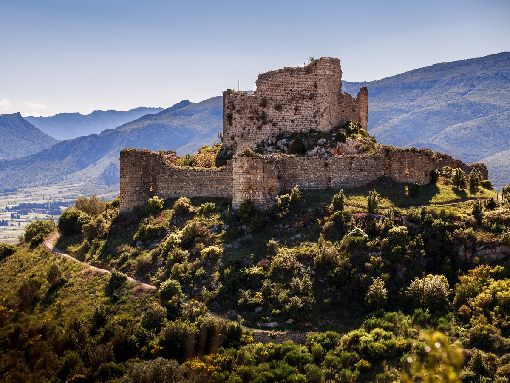
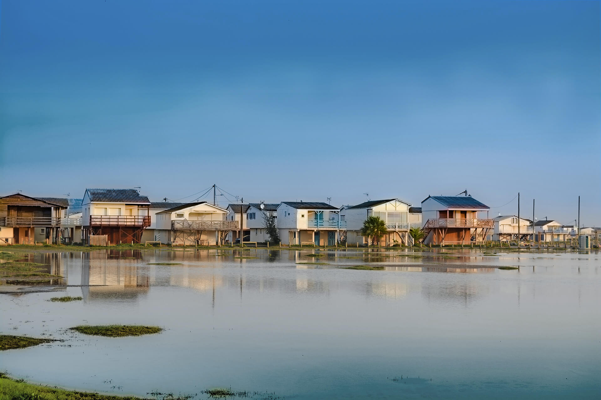

Weekend itinerary · Aude, Occitanie · France
Auberge du Vieux PuitsFontjoncouse
Sleep within a 1-minute walk of Gilles Goujon's three-star, then choose Sunday: Cathar castles, Fontfroide & Lagrasse, or the salt-pan coast — all within 30 km.
Arrive. Taste. Dine.
Auberge du Vieux Puits
Le Petit Clos
MaCoCo — Maison Coeur Corbières
Choose your loop.
The Auberge dining room is closed Sunday evenings — plan late morning brunch at Lagrasse's covered halle or Chez Bébelle in Narbonne before driving home.

Cathar Castle Loop
- Villerouge-Termenès · 14 km · €6–7 4 towers, fully restored, no climb, frescoes, lifelike-doll animations, medieval rôtisserie restaurant — last known Cathar parfait burnt here 1321
- Château d'Aguilar, Tuchan · 18 km · €4 Concentric ruin on a rocky knoll; best photogenic Cathar ruin for least effort; <10 min from car park; Jul–Aug 10h–19h
- Château de Termes · 20 km · €6 Steep 10-min climb, 15-min Crusade film, promontory views — 90 min visit rewards hikers

Abbeys & Villages
- Abbaye de Fontfroide · 13 km · €14–€29 If skipped Saturday; skip on Sunday if you went Saturday — the morning is better spent at Lagrasse
- Lagrasse · 29 km Cobbled Plus Beau Village on the Orbieu; 14th-c. covered halle; Saturday-morning market; Benedictine abbey in two halves (Augustinian canons + public dormitory)

Salt, Sea & Oysters
- Salin de Gruissan · ~28 km ~1h15 / 2 km guided walk over pink salt pans; flamingos, herons, egrets; inside the Parc naturel régional de la Narbonnaise
- Les Chalets sur pilotis, Gruissan · ~28 km ~1,300 wooden stilt chalets along 1.6 km of beach — the Betty Blue (1985) location, Rue des Cormorans
- Leucate village ostréicole · ~30 km ~20 producer huts open year-round; Cap Leucate oysters, creamy and direct

Réserve Africaine de Sigean
300 ha, 3,800+ animals. 7.5 km drive-through circuit (lions, giraffes, rhinos, Tibetan bears) plus pedestrian section (chimps, alligators, 1,000+ flamingos and birds). Open daily 9h; last admission 17h summer. Half-day minimum. [17]
Adult €34 · Child 4–14 €24 · 16 km south of Narbonne
Narbo Via (Foster + Partners 2021, mechanised wall of 760 Roman funerary blocks recovered in 1868, €12, Tue–Sun 10h–18h) [16] → Chez Bébelle at Les Halles (owner megaphones meat orders to butcher who throws them back across the hall; 8h–14h daily, closed Mon) [21] → Cathédrale Saint-Just (begun 1272, left unfinished when consuls refused to demolish the ramparts; choir vaults >40 m; free). Tight half-day. Add the Donjon Gilles Aycelin (162-step spiral, Pyrenees panorama) for a full one.
+33 4 68 44 07 37 — one call books both. They take the room and the table together; this is the single decision that locks everything else. 12 rooms, season 20 Mar–29 Nov 2026. Closed Mon, Tue, and Sun evenings. [5]
Lézignan-Corbières (~22 km): ~€60–€70 round-trip at night tariff D. Narbonne (~34 km): ~€120–€185. [19] Do the taxi math before booking character lodging outside the village — Fontjoncouse is a 127-person hamlet with no on-call car.
Aude logs 300–350 windy days per year; gusts to 140 km/h on exposed ridges. Check Météo-France for orange alerts before hiking Pic Saint-Victor. June is mostly safe — but spring tramontane episodes do happen.
UNESCO "Royal Fortresses of Languedoc" — covers Aguilar & Termes among eight sites; World Heritage Committee decision due summer 2026, your June visit is in the heritage-status window. [20]
Château de Lastours spa-hotel (39 rooms + pool + spa, 4-star) opens July 2026 at ~25 km — reshapes the character-lodging options mid-year. [18]
Dining room is shut Sunday evenings. Best brunch: Lagrasse covered halle (the natural Sunday stop after a castle morning) or Chez Bébelle at Narbonne Les Halles (closed Mon; aim for 9h–11h). [9][21]
None of the research confirmed: tasting-menu price, wine-pairing supplement, meal length, dress code, or reservation lead time. All of these come out of a single call to the Auberge. The trip is pure gastronomy + Corbières wine country — there are no IT conferences within 30 km.